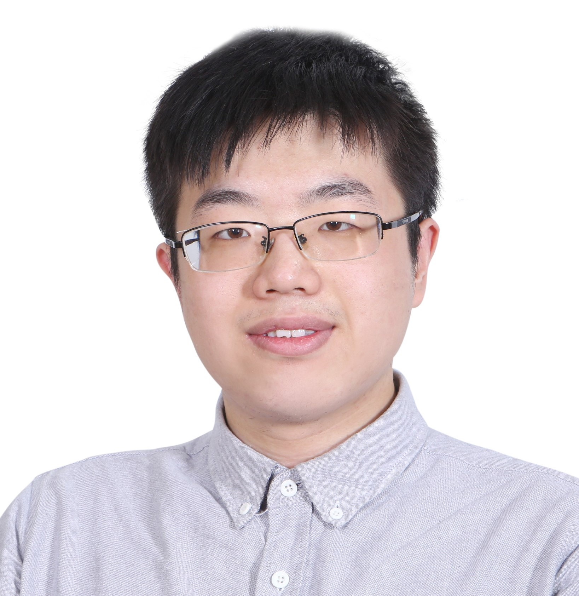
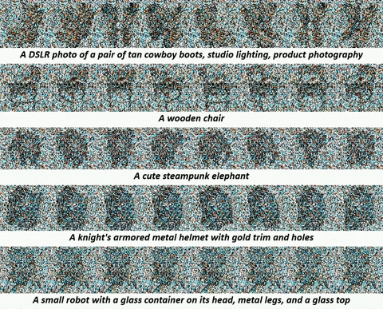
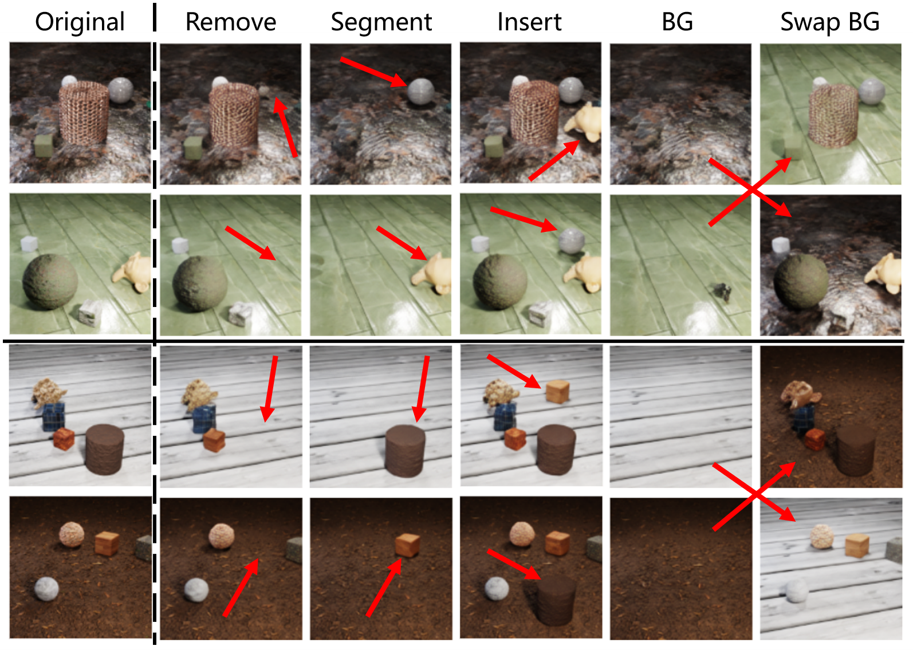
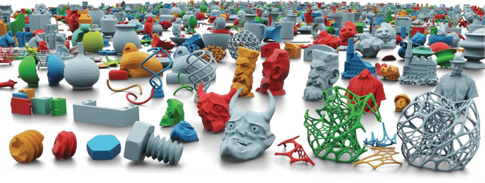
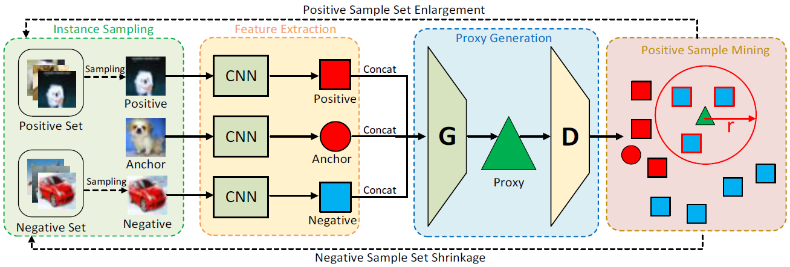
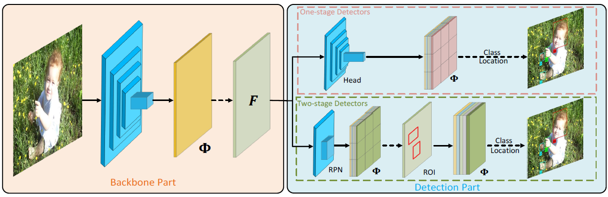
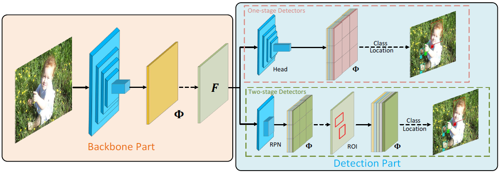

|
 |
Ziyi Wu (吴紫屹)
Ph.D. Student University of Toronto Email: ziyiwu [at] cs.toronto.edu CV • Google Scholar • GitHub • Twitter |
About
|
I am a fourth-year PhD student in Toronto Intelligent Systems Lab (TISL) at the University of Toronto and affiliated with the Vector Institute.
My advisor is Prof. Igor Gilitschenski.
I am currently an intern at Snap research working with Dr. Aliaksandr Siarohin and Dr. Sergey Tulyakov.
I was a Student Researcher at Google DeepMind with Dr. Thomas Kipf in Spring 2024.
|
News
- NEW [Jan, 2025] SG-I2V is accepted by ICLR 2025!
- [Jan, 2025] Invited talk at Vector Institute on Neural Assets.
- [Dec, 2024] We release MinT, a time-controlled multi-event video generator!
- [Sept, 2024] Neural Assets is accepted by NeurIPS 2024 as a Spotlight Presentation!
- [Feb, 2024] Two papers on multi-view diffusion model and event camera are accepted by CVPR 2024!
- [Sept, 2023] SlotDiffusion is accepted by NeurIPS 2023 as a Spotlight Presentation!
- [Feb, 2023] Two invited talk on SlotFormer in Prof. Kun Zhang's group and Neuroinformatics Group. Thanks Andrew and Guangyi for inviting me!
- [Jan, 2023] SlotFormer is accepted by ICLR 2023!
- [Oct, 2022] SlotFormer won 1st place at ECCV 2022 MVCS Workshop CLEVRER Challenge!
Research
Preprints
|
Mind the Time: Temporally-Controlled Multi-Event Video Generation |

Publications
|
SG-I2V: Self-Guided Trajectory Control in Image-to-Video Generation |
|
Neural Assets: 3D-Aware Multi-Object Scene Synthesis with Image Diffusion Models |
 |
SPAD: Spatially Aware Multiview Diffusers |
|
LEOD: Label-Efficient Object Detection for Event Cameras |
 |
SlotDiffusion: Object-Centric Generative Modeling with Diffusion Models |
|
SlotFormer: Unsupervised Visual Dynamics Simulation with Object-Centric Models |
 |
Breaking Bad: A Dataset for Geometric Fracture and Reassembly |
 |
Instance Similarity Learning for Unsupervised Feature Representation |
 |
Learning Efficient Binarized Object Detectors with Information Compression |
 |
BiDet: An Efficient Binarized Object Detector |


Academic Services
|
Journal reviewer: T-PAMI; TMLR; ISRR; RA-L; |
Teaching
|
Teaching Assistant, CSC 478: Robotics Perception23 Winter |
Selected Awards
- Outstanding reviewer at NeurIPS, 2024.
- Outstanding reviewer at NeurIPS, 2023.
- 1st place in CLEVRER track at MVCS Challenge (ECCV 2022 Workshop), 2022.
- Outstanding Graduates (Beijing, Tsinghua University & Dept. of Automation), 2021.
- SenseTime Undergraduate Scholarship for AI Research, 2020.
- Xiaomi Scholarship, Tsinghua University, 2020.
- Fang Chongzhi Scholarship, Tsinghua University, 2019.
- Chinese National Scholarship, 2018.
- Spark Program Membership, Tsinghua University.
Miscellaneous
|
I like basketball and soccer. My favorite players are LeBron James (well, associate G.O.A.T.?) and Lionel Messi (real G.O.A.T.!).
|
Ziyi Wu Last updated: Feb.4, 2025